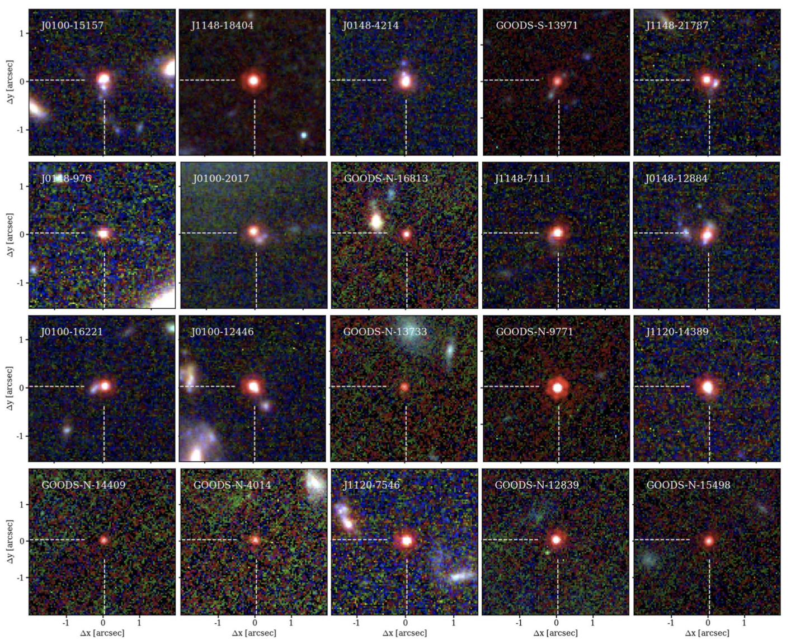
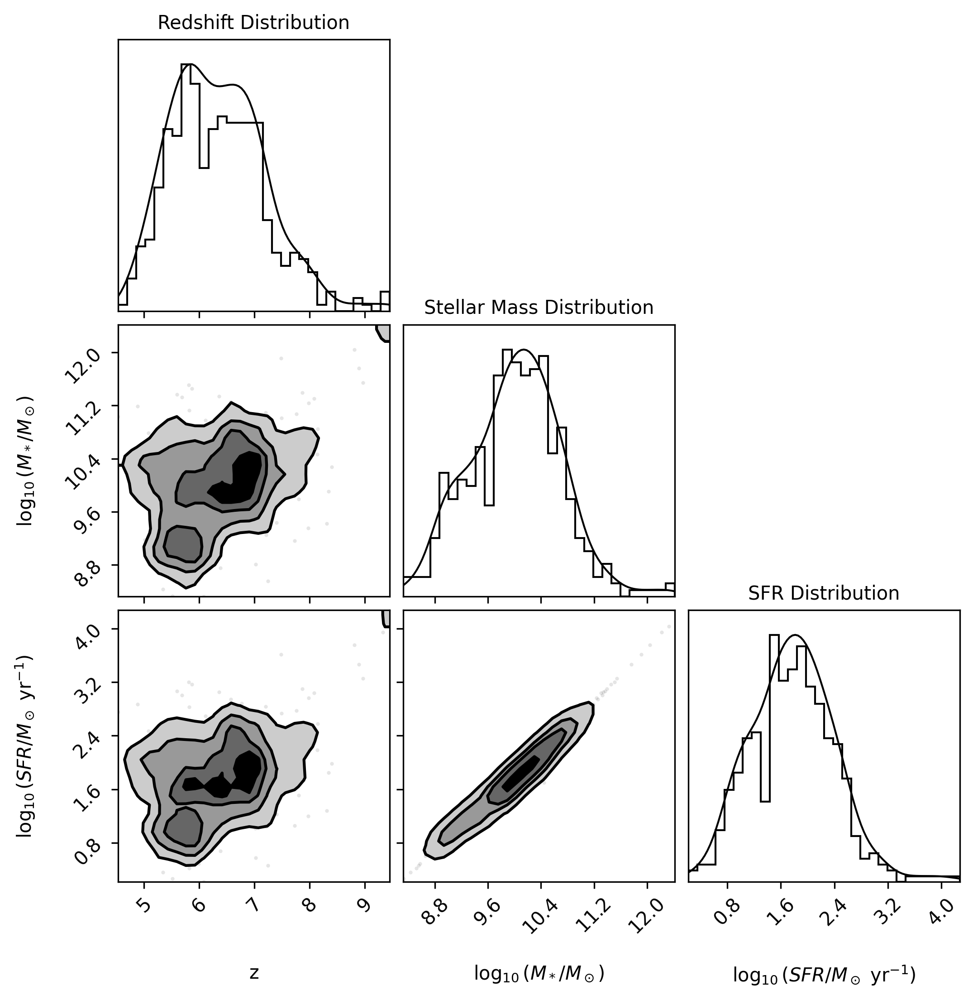
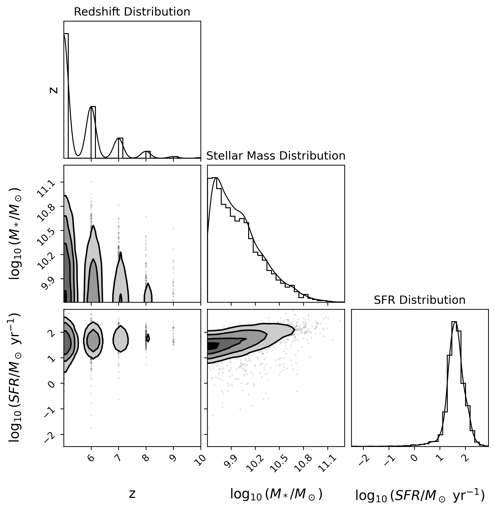
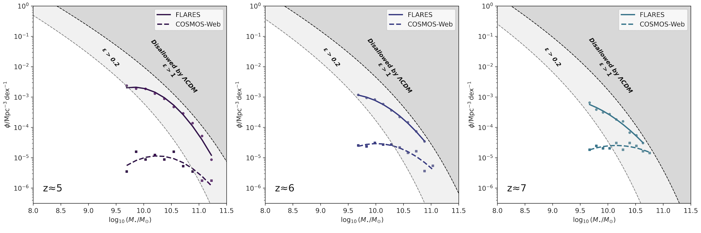
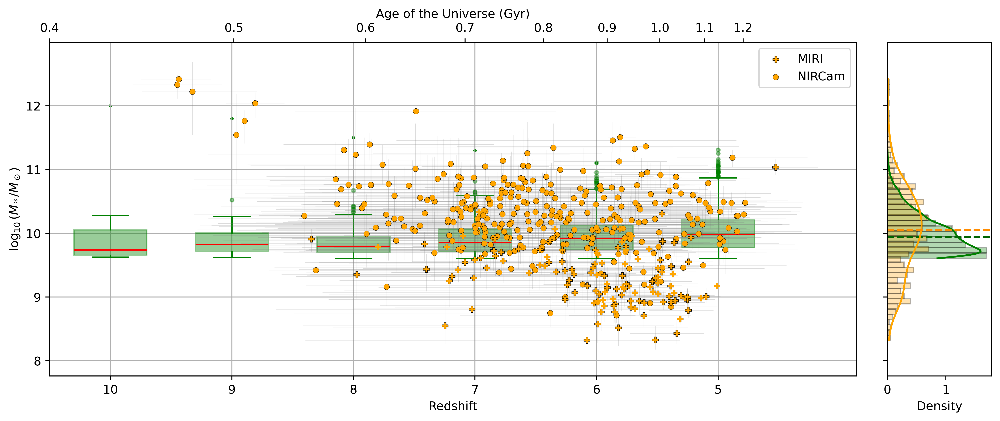

Evaluating the Predictive Capacity of FLARES Simulations for High Redshift 'Little Red Dots'
MSc Thesis · Imperial College London2022 – 2023Astrophysics of Galaxies32 pages · 11 figures
Abstract
The recent discovery of "little red dots" (LRDs) — a population of extremely compact and highly dust-reddened high-redshift galaxies — by the James Webb Space Telescope presents a new challenge to the fields of astrophysics and cosmology. Their remarkably high luminosities at redshifts 5 < z < 10 appear to challenge ΛCDM cosmology and galaxy formation models, as they imply stellar masses and star formation rates that exceed the upper limits set by these models. LRDs are currently subjects of debate as the mechanisms behind their high luminosities are not yet fully understood. LRD energy outputs are thought to be either dominated by star formation (starburst galaxies) or their energy output results from the hosting of active galactic nuclei (AGN).
We investigate the starburst hypothesis by attempting to replicate the stellar properties of LRDs using output data from the FLARES (First Light And Reionization Epoch Simulations) simulation suite. Comparative analysis of galactic properties such as galactic number density, stellar mass and star formation rate yield significant tension between simulated and observed galaxies. The FLARES simulation overestimates the number densities of galaxies with stellar masses similar to observed LRDs by several orders of magnitude. Additionally, the simulation shows an overestimation of star formation rates. These tensions suggest a potential underestimation by the FLARES model of stellar feedback mechanisms such as active galactic nuclei feedback. These results suggest that the starburst hypothesis may be insufficient to explain the observed properties of these galaxies. Instead, the AGN scenario should be further investigated by repeating the methods in this study with a hydrodynamic galaxy simulation suite that models a higher influence of AGN feedback mechanisms on stellar activity in high-redshift galaxies.
Figures

Figure 1. False colour stamps of 20 little red dots at z = 4.2–5.5 identified by Matthee et al. (2024) using NIRCam imaging of the EIGER and FRESCO surveys. LRDs stand out as red point sources.

Figure 5. Distributions and correlations of galaxy properties from the COSMOS-Web survey — redshift, stellar mass, and star formation rate, with contour maps showing pairwise relationships.

Figure 6. Same as Figure 5 for FLARES simulated galaxies, enabling direct comparison between observed and simulated populations.

Figure 7. Stellar mass functions at z ≈ 5, 6, and 7 comparing FLARES (solid lines) with COSMOS-Web observations (dashed). Shaded regions indicate stellar masses implausible under ΛCDM cosmology.

Figure 8. Stellar mass as a function of redshift for COSMOS-Web observations (yellow) and FLARES simulations (green). Median values are indicated by dashed lines.